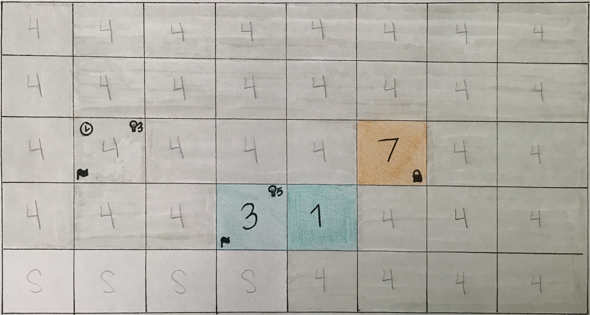

Forecaster Project Overview
Forecaster is a product made for pricing analysts. It provides pricing recommendations and also allows the analyst to take manual control. The reason for this is sometimes the algorithm behind the recommendations isn't 100% accurate. There always needs to be human tweaking for things like holiday specials, conference events... While reviewing these screens, please keep in mind that the users of this application are power users that are used to consuming large amounts of data and utilizing certain vocabulary and definitions that are niche to their industr
Problem: The current application is very outdated and difficult to learn. Information is difficult to consume and strains the eyes. See below for some screenshots.
Solution: Increased padding and cleaner styling to improve readability. I worked with one other UX designer to provide a total redesign of the application. We focused on improving learnability for new users while retaining the information and data structure that current users have become accustomed to.
Section 2
Recommendations: Pricing strategies
Below are UI designs for a new feature called 'Recommendations' in the Rental application. Fitting to its name, the Recommendations feature provides pricing strategy recommendations to the pricing analyst. This provides value to the pricing analyst because some days (ex: holidays, conferences) are more popular for car rentals and need to be priced higher. The pricing strategy value is represented on a scale of 1 (low price) to 7 (high price) with 4 being the default value for normal price. The system uses scientific algorithms provided by PROS to provide pricing recommendations in clickable buttons below each value. The pricing analysts can accept these recommendations individually or all at once. Gray values in parentheses indicate the old value that was overridden.
Section 3
The 'Suspensions' feature allows pricing analysts to manage their car inventory at various locations. The values represent whether a particular car class for a certain length of rental should be available all day (A), only in the morning (AM), only in the afternoon (PM), or suspended for the day (S). Similar to pricing strategies, PROS provides an algorithm that makes recommendations for suspensions. It was a challenge to design these pages because of the information density on each page, but I wanted to maintain a consistent look and feel between the two types of recommendations. Compared to the current Rental application, the redesign helped improve learnability and readability while maintaining functionality.
*Note: Some users have since provided feedback that there is too much white space and they would like to see more data at once (a common request from our users at PROS). We are currently working on creating accessibility options that allow the user to adjust the padding, row height, column width, and font size of information in tables.